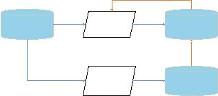

|

新闻报道
事件提取算法
开放数据
人工标注
计算结果
标注结果
评估
检验
修正
图
1:
事件提取的总体架构图
集了相关信息，中国各省市GDP数据、日期与节日对
应表等，之后把这些数据与已有数据源融合，为完善
数据特征做好了准备工作。
(3)事件类型标签修正
新闻和微博数据集中，每一条新闻纪录已通过标
签对每一条新闻进行了标注，共3类：公交车爆炸事件、
暴恐事件、校园砍伤事件。然而经过对数据进行采样
分析，我们发现有许多错标、漏标的情况，甚至有很多
与公共事件无关的新闻也误被标注为三类事件之一，
标注准确率很低，对我们后续的事件提取工作造成了
很大的干扰。为了更准确地进行事件提取，我们对每
一条新闻重新进行了事件类型标注。首先针对三个系
列事件，人工建立含有少量相关词汇的语义库，之后
采用相邻相关词语扩充算法，对每一类事件已有的语
义库进行扩充。当针对每一系列公共事件建立好相应
的语义库之后，对每一条新闻的标题进行分词，与所
建立的词库进行词语匹配，计算匹配度，新闻与哪一
类事件的匹配度最高，则把这一条新闻标注为哪一类
事件，如果某一条新闻与三类事件的匹配度都很低(低
于设定阈值)，则定义这条新闻定义为无关数据(杂质
数据)。经抽样统计，修正后的数据事件类型标签准确
度达95%以上。
3
事件提取
3.1
整体思想
经过数据去重、信息完整化、事件类型标签修正
的预处理之后，与公共事件无关的杂志数据已被过滤
掉，得到公交车爆炸、暴恐、校园砍杀三个系列事件
的所有新闻。我们的事件提取工作正是基于针对这三
个系列事件的所有新闻，分为三个系列分别进行处理，
三个系列事件的处理流程相同。
事件提取工作分为两部分，采用TF-IDF相似度匹
配算法进行事件提取；采用开放数据微信平台，以众
包的方法对事件进行人工标注，对TF-IDF相似度匹配
算法的计算结果进行评估与检验，进而对算法进行修
正。整体架构如图??所示。
3.2 TF-IDF相似度匹配算法
3.2.1
概述与准备工作
一起公共事件会有许多相关媒体报导，包括新闻
报导以及微博报导。即使是针对同一个事件的报导，
也会有很大的差别，包括时间上的差别与内容上的差
别。比如针对同一事件的不同报导在时间上可能相隔
数周，不同媒体对同一事件报导风格相差迥异。如何
在这些海量的报导中识别出哪些属于对相同事件的报
导，进而把事件提取出来具有很大挑战。TF-IDF相似
度匹配算法通过设定时间阈值，定义并计算新闻间的
相似度，根据相似度对不同的新闻分为不同的簇，每
一簇中的所有新闻认为是对同一事件的报导，进而实
现事件提取。
算法的输入为每一条新闻的主键、报导时间(精确
到天)、标题、正文内容、新闻所属事件类别，输出为
每一条新闻对应的事件主键，其中事件主键自动生成。
在使用TF-IDF相似度匹配算法进行事件提取之前，我
们做如下准备工作：报导事件类型分系列处理、时间
地点人物信息提取、同系列事件时间排序。
(1)
报导事件类型分系列处理
数据预处理中我们把属于同一系列事件的新闻打
好标签(公交车爆炸事件、暴恐事件、校园砍杀事件)，
且具有很高的准确度。同一系列事件的媒体报导具有
很高的相似性，因此我们把所有媒体报导按照系列类
别分类(公交车爆炸、暴恐、校园砍杀)，对每一类分别
进行事件提取，这会对分类准确度有很大的提高。
(2)时间地点人物信息提取
为了精确地对一条媒体报导进行描述，我们首先
做假设1：假设1
某事件可以由时间、地点、人物三个
要素唯一确定。
基于假设1，我们对每一条媒体新闻所描述事件的
时间、地点、人物进行提取。我们对每一条媒体报道
的标题、内容通过基于词典与基于规则相结合的方法
进行分词。并对其中的地点词语、任务词语自动识别，
进行提取，作为这一媒体报导的地点、人物特征。
(3)同系列事件时间排序
提取过程中我们发现，绝大多数的新闻中对事件
的报道的描述很模糊(例如“昨日下午”、“傍晚”等很
不精确的时间描述)，而根本无法从新闻的描述中得出
具体的事件发生时间，我们有的只有这一条媒体的报
导时间。我们做出假设2：
假设2
事件发生时间与第一条新闻发表时间相隔
很近，即为时间发生时间就是第一条新闻的报导时间。
根据假设2，我们对每一个系列事件中的所有媒体
报导按照时间从前到后的顺序进行排序。这样在把媒
体报导分为n个事件后，每个事件最早的一个新闻报导
即为事件发生的时间。
3.2.2 TF-IDF计算
在准备工作中，我们针对每一个媒体报道提出了
一个人名地名词库。我们对每个系列的媒体报道中，结
合每一条媒体报导的词库，整合成一个所有人名、地
名词库。把每一条新闻用一个向量表示，向量的维度
即为同系列事件中所有媒体报导的词语。之后，每一
条媒体报导的向量计算每个词语的TF-IDF值，这是对
每条媒体报导特征的数值化表示。计算方法如下:
(1)
计算词频
词频(Term Frequency，TF)指的是某一个给定的词
语ti在该文件中出现的频率。对于在某一特定文件里
|